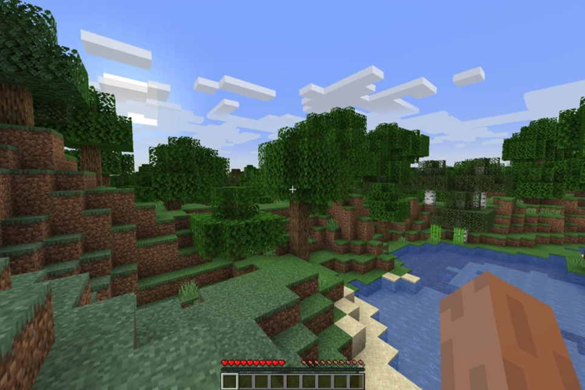
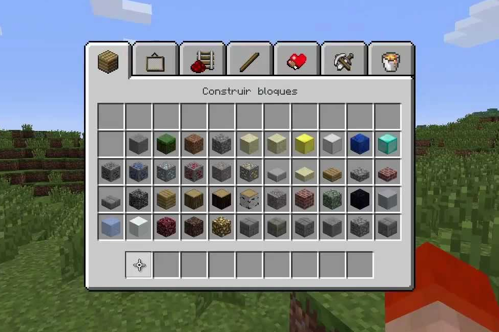
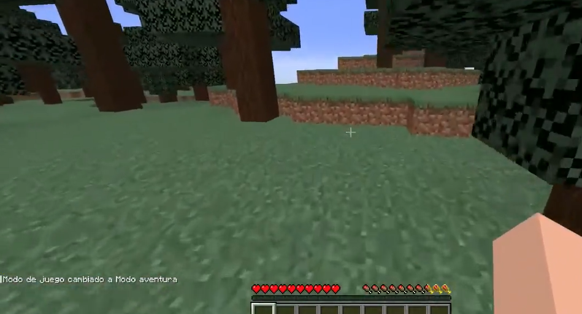
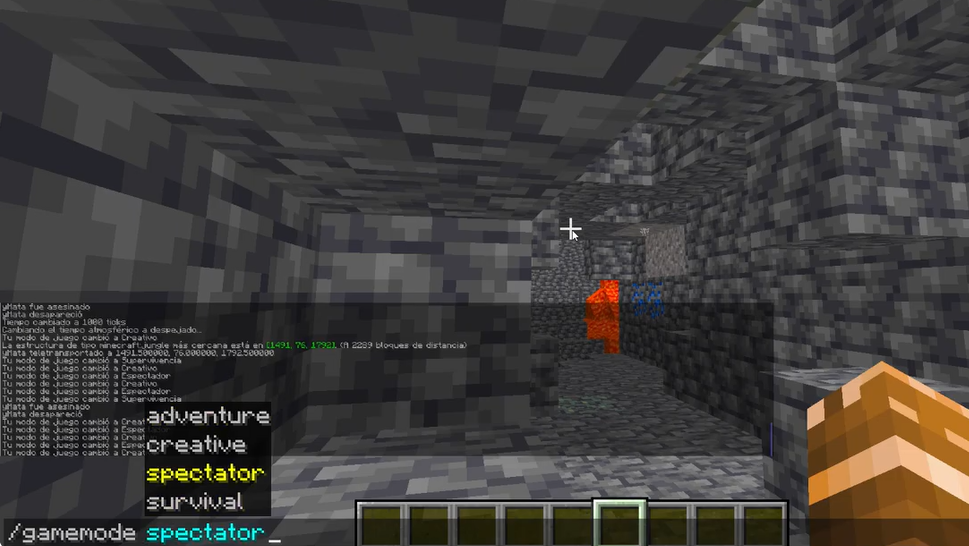
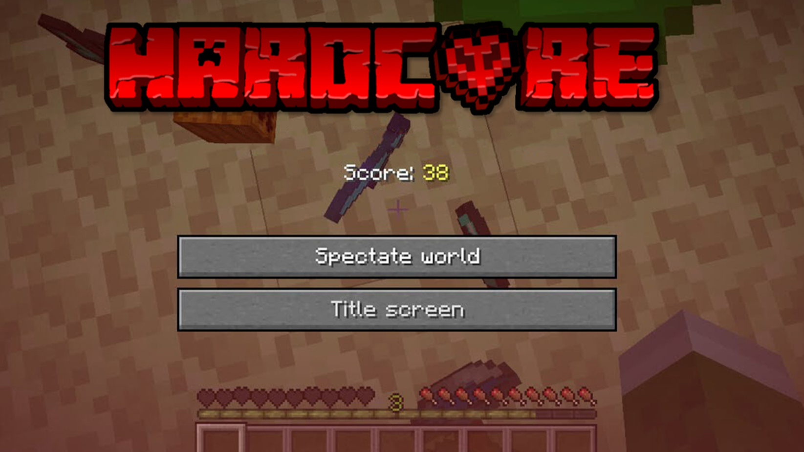

¡Manual definitivo para principiantes en Minecraft!

Que son los modos de juego?
Un modo de juego dicta cómo un jugador puede interactuar con un mundo de Minecraft.
los más comunes son
superviviencia, creativo, aventura, espectador y extremo
Supervivencia
En este modo, los jugadores tienen que reunir todos los materiales para construir, fabricar objetos y herramientas
y ganar puntos de experiencia. Hay una barra de salud, hambre y armadura, un inventario y también una barra de oxígeno
cuando se está bajo el agua, asfixiado o en la lava.Si un jugador se queda sin corazones (salud), muere y vuelve al punto
de aparición. Al morir, el jugador emite humo, pierde toda la experiencia y los objetos, y un mensaje de muerte.
Los jugadores tienen como objetivo recoger recursos, construir su hogar, acabar con las criaturas y explorar la tierra
con la intención de sobrevivir.

Creativo
El jugador tiene acceso a una cantidad infinita de casi todos los bloques y objetos disponibles, y puede destruirlos
al instante. El jugador es invulnerable, a menos que caiga al vacío,(solo en la edición de java) y no tiene salud, armadura
ni hambre, y puede volar. El jugador tiene acceso a objetos que no están disponibles en el modo Supervivencia, por ejemplo,
los huevos generadores.
El modo creativo le permite a los jugadores volar. Para activar el vuelo, haga clic dos veces en la tecla de salto(espacio).
Use la tecla de salto (espacio) para subir y la tecla de agachado (shift izquierdo) para bajar, además de las teclas
de movimiento (wasd) para moverse. Los jugadores pueden desactivar el vuelo simplemente volviendo a hacer dos clics en la
tecla de salto, provocando que caigan al suelo. Tocar el suelo no desactiva el vuelo.

Aventura
Este modo de juego esta diseñado para mapas creados por jugadores, limitando varias de las mecánicas presentes en Minecraft. En este modo, el jugador es incapaz de destruir bloques, ya sea con herramientas o con la mano, y es incapaz de colocarlos, lo que implica que no se puede alterar el entorno ni puede ser asaltado por jugadores.

Espectador
En el modo Espectador, el jugador puede atravesar los bloques y volar libremente. El jugador no puede interactuar con los bloques, las entidades o su inventario. Le permite al jugador volar y observar el mundo sin interactuar con él de ninguna manera.

Extremo
En este modo, que se juega de la misma manera que el modo Supervivencia, el nivel de dificultad se establece permanentemente en "Difícil", y cuando el jugador muere, debe borrar el mapa o cambiar permanentemente al modo Espectador, lo que le impide interactuar con el mundo nunca más.
